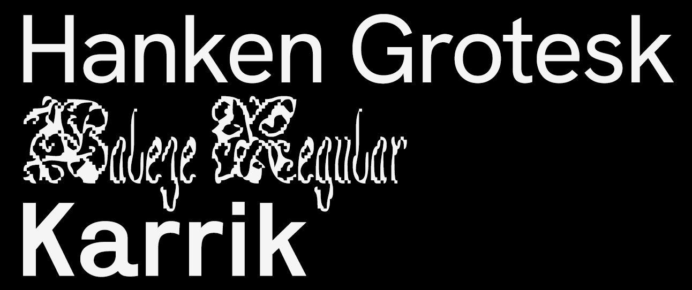
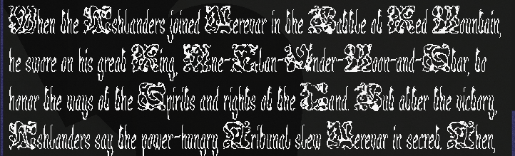
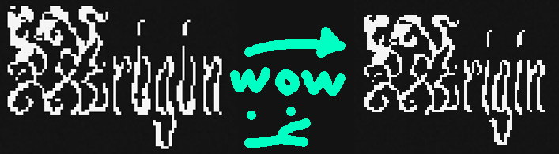
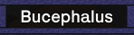

Stories from the Font Mines
The Font Mines call. It's the name I give to "the process of searching for and testing fonts in-engine", and it's a grueling slog. So today, I'll be telling stories from the Font Mines. This post will cover

The three fonts that will be covered in today's stories.
To start, Hanken Grotesk. That's the font that is being utilized right now, across my entire website. I love it! I have a lot of problems with it, too. It's a font I love exactly and hate exactly, which is better than 99% of fonts I know of. I know what I hate about it: its () brackets, the uneven spacing between the base of the lowercase i and the tittle. Some other, even more minor things. Lots of small things! But I think it's hyper-legible and beautiful. It was the font I initially used for all textboxes in Island Off Outer Darkness, and after a dozen hours in the Font Mines, it's still the font I'm utilizing for most textboxes. I sacrifice readability by utilizing other fonts, and the vibe just isn't the same with other things.

Hanken Grotesk on Huleeya's Nerevarine text, the test dialogue for Island Off Outer Darkness.
Secondly, Baleze. It's a beautiful, difficult, pluripotent font, which I adore with all my heart and soul. It's utilized for one of the characters in Island Off Outer Darkness. Initially, I wanted to use Ready Active, but the readability just wasn't there. And I really wanted it to be! But it wasn't. After much, and I mean much searching, I came across Baleze on Future Fonts. And I knew it was the one. The readability is difficult, but it's there, and it's gorgeous. And the creator, Ando from Daytona Mess, is wonderful! The lowercase i and j had significant readability issues, and I emailed them about this, and they created two alternate glyphs as a stylistic set, completely free-of-charge.

Baleze on Huleeya's Nerevarine text.

A comparison between the OG Baleze and Ando's changed glyphs.
Lastly, Karrik. It's strong, and I'm utilizing it for the titles of textboxes. I discovered it by following Ando from Daytona Mess's other work, which led me to Velvetyne, which led me to Karrik. And there's a Karrik IF game! Ain't that cool. This one's pretty simple, not a very evocative story. "I followed an interesting font and found a workhorse".

Karrik in action in-game.
There are easily a dozen fonts lost in the not-being-used mines. I initially planned for every character to utilize a font based on their regional background, but after getting, like, 9 different regional fonts established, I determined that it hurt readability and dialogue flow. So I cut the feature. Making cuts hurts a lot, but, y'know, it's for the best. Part of the assortment is Basteleur, Degheest, Sweynheim & Pannartz, in Gotico Antiqua, Overpass, Syne, and Theano Didot.
Did you know Discord's current font, GG Sans, is closed-source, and you can't license it? Or that the LDS church has a private, unlicenseable font that they use for logos? Or that Discord's old font, Whitney, costs, like, an arm and a leg to license? These and more stories can be found... in the Font Mines.